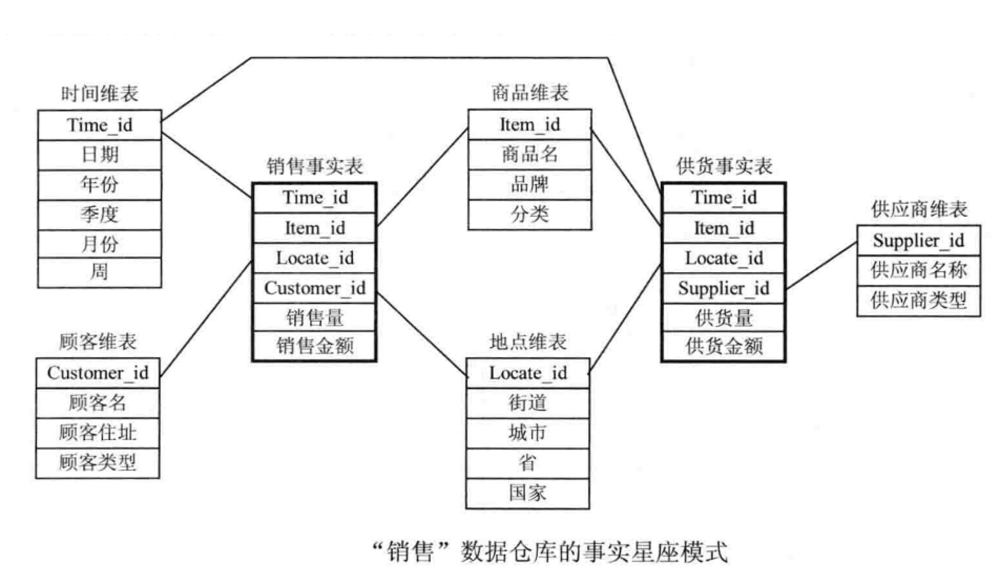

数据建模
- 模型设计的三个阶段
- 概念模型：将业务划分成几个主题
- 逻辑模型：定义各种实体、属性、关系
- 物理模型：设计数据对象的物理实现，比如表的命名规范、字段的命名规范、字段类型等
- 数据库建模有
维度建模和范式建模.
范式建模
- 定义：范式建模将事物抽象为
实体(Entity)、属性、关系(Relationship)来表示数据关联和事物描述。也称熟悉的E-R模型。 - 即关系模式。一张数据表的表结构，符合的设计标准的级别
- 目的在于降低数据的冗余性和保证数据的一致性。缺点是获取数据时，通常需要通过Join拼接出最后的数据。
第一范式（1NF）：
所有的域都应该是原子性的，即数据库表的每一列都是不可分割的原子数据项，而不能是集合，数组，记录等非原子数据项。即实体中的某个属性有多个值时，必须拆分为不同的属性。在符合第一范式（1NF）表中的每个域值只能是实体的一个属性或一个属性的一部分。如：
商品: 两个篮球 可以拆分为 商品: 篮球， 数量: 2
第二范式（2NF）
在 1NF 的基础上，非码属性 必须完全依赖于 候选码（在1NF基础上消除非主属性对主码的部分函数依赖）简而言之，第二范式就是在第一范式的基础上，加上一条规则：属性完全依赖于主键。
-
码：码是可以确定一个元组的所有信息的属性名或属性名组。
姓名，年龄是码，因为姓名，年龄决定了 [姓名、性别、年龄、身高] ，同理，姓名也是是码，但年龄决定不了 [姓名、性别、年龄、身高] 所以年龄不是码。 -
候选码：候选码的真子集中不存在码，候选码可以有多个。（
姓名可以决定性别年龄身高，所以姓名是候选码，学号也可以决定性别年龄身高，所以也是候选码。{姓名，年龄}不是候选码，因为其真子集{姓名}是码） -
主码：主码就是熟悉的主键。主码是任意一个候选码。在建模过程中，建模人员从候选者中挑选一个候选码作为主码，这个主码就是主键。
-
主属性：所有候选码的属性称为主属性。不包含在任何候选码中的属性称为
非主属性或非码属性。（学号和姓名就是该关系的主属性，年龄和性别就是非主属性。） -
(部分)函数依赖：姓名可以决定学生宿舍，学号也可以决定学生宿舍，那说明学生宿舍部分依赖于学号+姓名。
-
完全函数依赖：学号+课程可以决定分数，但学号不能单独决定分数，姓名不能决定分数。所以说明分数完全依赖于学号+课程。
第三范式（3NF）
在2NF基础上，任何非主属性不依赖于其它非主属性（在2NF基础上消除传递依赖）
- 传递依赖：学号决定姓名，姓名决定性别、班级，班级决定班主任。但是，班主任不能反推决定班级(一个班主任不一定只负责一个班级)，班级不能反推姓名(一个班级有很多姓名)。所以说明班主任传递依赖于学号。
总结
- 范式越高，冗余越少，数据越规范
- 范式越高，越灵活，扩展性越强，使用成本越高
- ER模型是数据库设计的理论基础，
Bill Inmon提出使用 ER模型 构建数仓。 - 对于ER模型，我们需要梳理清楚企业各个业务系统的实体，实体间的关系，实体的属性，它的实施周期长，而互联网行业是不断探索，不断迭代的过程，当你还没有梳理清楚的时候，业务就已经发生了改变，甚至当你的数仓还没建好的时候，有可能这个企业已经黄了。
维度建模
- 事实表：描述一个客观存在的事实的记录表。事实数据表。发生在现实世界中的操作型事件，其所产生的可度量数值，存储在事实表中。从最低的粒度级别来看，事实表行对应一个度量事件，反之亦然。通常是app埋点日志。
- 维度表：每个维度表都包含单一的主键列。维度表的主键可以作为与之关联的任何事实表的外键，当然，维度表行的描述环境应与事实表行完全对应。 维度表通常比较宽，是扁平型非规范表，包含大量的低粒度的文本属性，维度表一般由代理键、自然键、维度属性三部分构成。
（相当于将事实表中的属性维度提取出来，和指标一起称为维表） - 维度：用于说明数据。维度是指可指定不同值的对象的
描述性属性或特征。(杯子的颜色，材质) - 指标：用于衡量数据。指可以按
总数或比值衡量的具体维度元素。(杯子的长度、体积、容积)。 - 区别：维度不可衡量，指标一般可衡量，能说出具体是多少，而维度更倾向于文字性描述。（不知道这样理解对不对，好像下面那个城市的例子更准确）
在维度建模中，通常将指标的度量称之为
事实，将产生度量的环境称之为维度。将描述同一个业务实体的的多个维度列组合在一起，就是常说的维度表。
虽然维度和指标可以独立使用，但常见的还是相互结合使用。维度和指标的值以及这些值之间的关系，使您的数据具有了意义。为了挖掘尽可能多的深层次信息，维度通常与一个或多个指标关联在一起。例如，维度
城市可以与指标人口和面积相关联。有了这些数据，系统还可以创建“人口密度”等比值指标，带来有关这些城市的更详细的深入信息。
数据库中，键和码是一个东西，就是叫法不同而已。除了上面提到的 码，候选码，主码 之外，还有以下几个。
- 复合键：由两个或者多个属性组成的键。
- 自然键：由现实世界中已经存在的属性组成的键。姓名，学号，身份证
- 代理键：不具有业务含义的键
- 备用键：也就是次键，是表中行的另一个唯一标识。
- 外键：在一个实体类型中表示另一个实体类型的主键或者次键的一个或多个属性。
星型模型
-
定义：由一个事实表和一组维度表组成，每个维表都有一个维度作为主键，事实表居中，多个维表呈辐射状分布于四周，并与事实表连接，形成一个星型结构。
雪花模型
-
在星型模型的基础上，基于范式理论进一步层次化，将某些维表扩展成事实表，最终形成雪花状结构。标准的星型模型维度只有一层，而雪花模型可能会涉及多级，
维度层级是雪花模型与星型模型的主要区别。雪花模型比较接近3NF，但是无法完全遵循，因为遵循3NF的性能成本太高。
星座模型
-
星座模型与前两种情况的区别是事实表的数量，星座模型是基于多个事实表。
-
基本上是很多数据仓库的常态，因为很多数据仓库都是多个事实表。所以是否星座只反应是否有多个事实表，它们之间是否共享一些维度表。星座模型不和前两种模型冲突。

建模步骤
选择业务过程
- 选择感兴趣的业务线，业务过程通常的表示是业务执行的活动，与之相关的维度描述和每个业务过程事件关联的描述性环境。如下单，支付，退款，活动
- 业务过程建立或获取关键性能度量。
声明粒度
- 粒度传递的是与事实表度量有关的细节级别。
- 精确定义某个事实表的每一行表示什么。(一行代表一条订单？一天的订单？一周的订单)
- 对事实表的粒度要达成共识。
确认维度
- 健壮的维度集合来粉饰事实表。(谁？什么时间？什么地点？)
- 维度表示承担每个度量环境中所有可能的单值描述符。
确认事实
- 不同粒度的事实必须放在不同的事实表中。
- 事实表的设计完全依赖物理活动，不受最终报表的影响。
- 事实表通过外健关联与之相关的维度。
- 查询操作主要是基于事实表开展计算和聚合。(度量值：如个数，件数，金额)
最后来个对比的表格
| 区别 | 数据库 | 数据仓库 |
|---|---|---|
| 面向 | 事务(OLTP) | 分析/决策(OLAP) |
| 建模方式 | 范式建模 | 维度建模 |
| 数据量 | 小(GB) | 大(TB/PB) |
| 前期成本 | 大 | 小 |
| 后期成本 | 小 | 大 |
| 数据冗余度 | 小 | 大 |
| 数据灵活度 | 大 | 小 |
| 架构 | Inmon | Kimball |
| 建模方向 | 自上而下据源 | 自下而上 |
| 数据流向 | 从数据源头头开始设计 | 从数据指标开始 |
| 表结构 | 实体+属性+关系 | 事实+维度 |
| 使用场景 | 业务模式较固定 | 业务变化较频繁 |